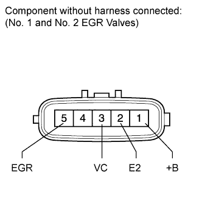

EGR VALVE (w/ EGR System) > INSPECTION |
| 1. INSPECT EGR VALVE ASSEMBLY |
 |
Check the EGR valve position sensor.
Measure the resistance according to the value(s) in the table below.
| Tester Connection | Condition | Specified Condition |
| 1 (+B) - 5 (EGR) | 20°C (68°F) | 6.5 to 7.5 Ω |
| 3 (VC) - 2 (E2) | Always | 2.45 to 4.55 kΩ |